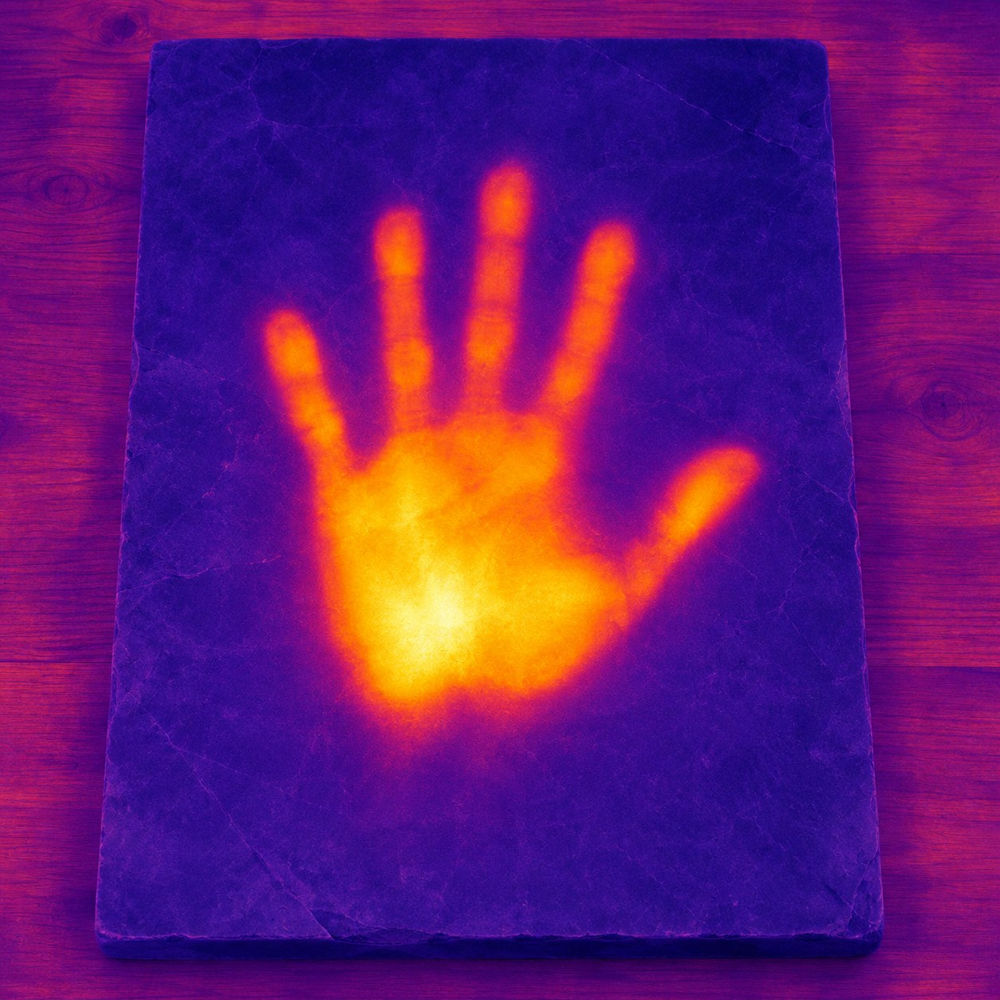
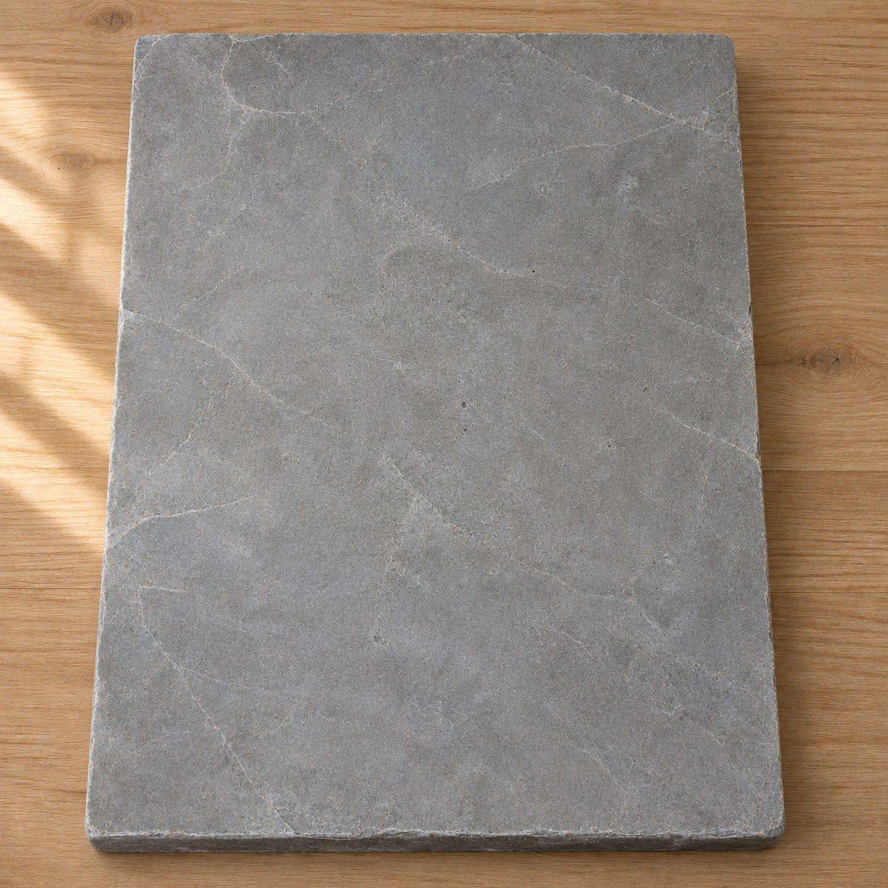

Where the Hand Was


A hand lay flat on a slab of grey stone for an hour, and then it lifted. In daylight nothing happened. The stone looks exactly as it did before. But to a camera that sees heat, the hand is still there: a glowing print, a palm and five fingers, brightest where it pressed hardest, already going dim at the tips.
It is the only portrait a body can leave without leaving anything. No ink, no dust, no mark. Just a little of what being alive is, which is being warmer than the room.
Robert Barry let measured amounts of gas loose into the air in 1969, and that was the work. The gas went everywhere, which is to say nowhere you could point to. Warmth does the same thing, only slower and closer. The stone does not keep the hand. It shares it out, to the air above and the table below, until the print is the same as the rest of the stone, and the stone is a fraction warmer than it was, all over, where no one can see.
Heat only moves one way, from warm to cold. So the print can only fade, never sharpen. It runs in the same direction as time, at its own pace: a few minutes, for a hand.
The two pictures were taken in the same second. In one, the stone is bare. In the other, someone has only just let go.